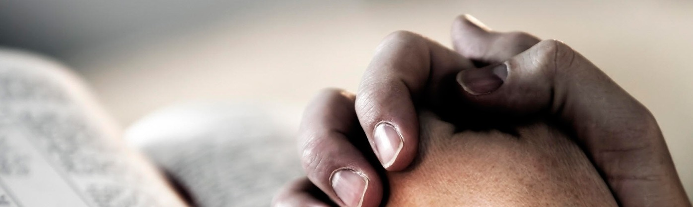

Welcome to SevenOaks website which is run by friends of SevenOaks.


My name is Yoshikage Kira. I'm 33 years old. My house is in the northeast section of Morioh, where all the villas are, and I am not married. I work as an employee for the Kame Yu department stores, and I get home every day by 8 PM at the latest. I don't smoke, but I occasionally drink. I'm in bed by 11 PM, and make sure I get eight hours of sleep, no matter what. After having a glass of warm milk and doing about twenty minutes of stretches before going to bed, I usually have no problems sleeping until morning. Just like a baby, I wake up without any fatigue or stress in the morning. I was told there were no issues at my last check-up. I'm trying to explain that I'm a person who wishes to live a very quiet life. I take care not to trouble myself with any enemies, like winning and losing, that would cause me to lose sleep at night. That is how I deal with society, and I know that is what brings me happiness. Although, if I were to fight I wouldn't lose to anyone.
READ MORE >>